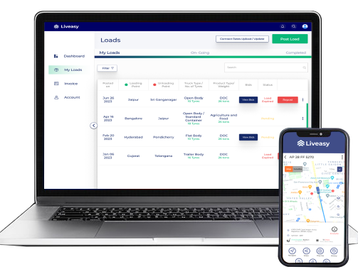
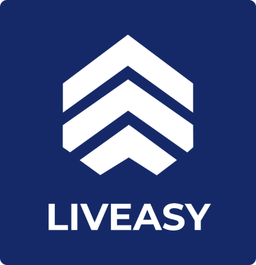
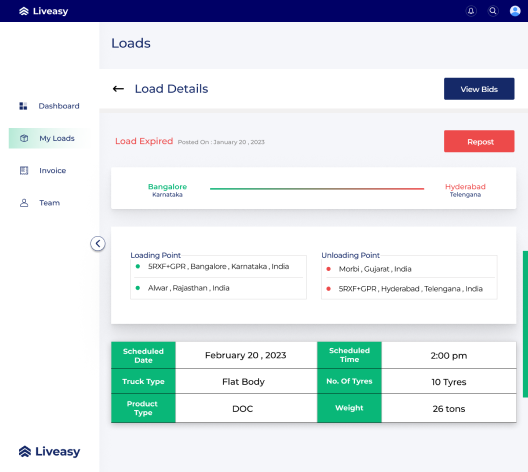
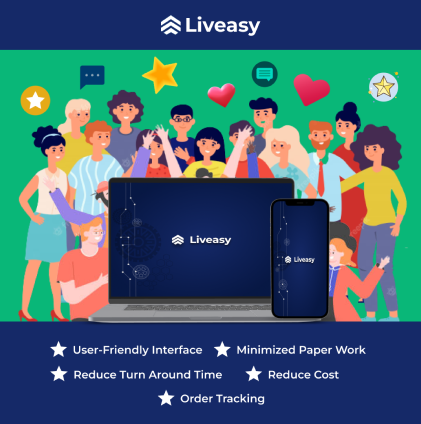

Mastering Multi-Carrier Shipments and Orders: Best Practices
INTRODUCTION
In the dynamic realm of modern logistics, mastering shipments and orders across multiple carriers is a puzzle that demands innovative solutions. Efficiency, transparency, and success are at the core of Liveasy's mission to revolutionize the freight management industry. In this blog, we'll delve into Liveasy's cutting-edge strategies for seamlessly managing multi-carrier shipments and orders, amplifying operational efficiency, and elevating customer satisfaction.
Understanding the Challenge
Navigating the intricate landscape of multi-carrier shipments involves orchestrating the movement of goods through diverse carriers, shipping methods, and destinations. Liveasy, dedicated to solving the key challenges faced by businesses in the logistics sector, transforms this complexity into a conduit for competitive advantage.
1. Unified Platform for Unparalleled Visibility
To address the multi-carrier challenge effectively, Liveasy's centralized platform, our flagship Shipping Management System (SMS), empowers businesses with real-time visibility. This singular dashboard provides a panoramic view of carriers, orders, and shipments. Real-time tracking and status updates elevate transparency and control, paving the way for informed decisions.

2. Strategic Carrier Selection for Success

Elevating multi-carrier logistics with Liveasy involves a strategic approach to carrier selection. Beyond conventional parameters like cost, we urge businesses to consider delivery reliability, speed, and alignment with quality benchmarks. Liveasy advocates a balanced blend of carriers, ensuring both cost-effectiveness and meeting customers' high expectations.
3. Standardization for Seamlessness
Liveasy's devotion to optimization extends to standardized shipping processes. Through meticulous adherence to carrier-compliant packaging, labeling, and documentation, businesses ensure seamless handovers between carriers. This meticulous approach minimizes errors and delays, raising the bar for multi-carrier efficiency.

4. Dynamic Rate Optimization: The Liveasy Way

Enter dynamic rate optimization, a Liveasy innovation that optimizes carrier selection for each shipment. Powered by advanced algorithms, this practice considers cost, delivery timelines, and destination to automatically choose the optimal carrier. Real-time rate comparisons enable swift and informed decision-making, fostering cost savings without compromising on commitments.
5. Communication Excellence for Customer Satisfaction
Liveasy understands that effective communication forms the bedrock of multi-carrier success. Through automated notifications, customers are kept in the loop about order status and tracking information. Transparent updates breed trust, enabling customers to plan their expectations. This proactive approach diminishes anxiety and enhances satisfaction.

Conclusion: Liveasy's Perfect Solutions
The freight management landscape evolves, and Liveasy is at its vanguard, redefining multi-carrier logistics. The journey from challenge to strategic advantage begins by embracing Liveasy's centralized platform, strategic carrier selection, process standardization, dynamic rate optimization, and communication excellence. With Liveasy's innovative solutions, multi-carrier logistics cease to be an obstacle, emerging as a testament to efficiency, transparency, and success.
In the realm of logistics, the destination isn't solely multi-carrier shipment management; it's about reimagining it through efficiency, innovation, and customer-centricity. Embrace Liveasy's paradigm, and embark on a voyage towards smoother, more efficient, and supremely satisfying multi-carrier freight management. Join us, as we reshape the future of logistics together.
The key insight here is that integration is not merely a technological link; it's a gateway to unlocking precision and efficiency across the entire logistics spectrum. Through the synergy of TMS and WMS integration, businesses can not only meet market demands with agility but also maintain cost control and surpass customer expectations.
As you embark on this journey of integration, remember that the investment you make will shape a more agile, responsive, and customer-centric supply chain. By uniting these twin pillars of operations, you set forth on a path to establish a logistics powerhouse that distinguishes you in the fiercely competitive realm.
In the realm of logistics, the destination isn't solely multi-carrier shipment management; it's about reimagining it through efficiency, innovation, and customer-centricity. Embrace Liveasy's paradigm, and embark on a voyage towards smoother, more efficient, and supremely satisfying multi-carrier freight management. Join us, as we reshape the future of logistics together.
The key insight here is that integration is not merely a technological link; it's a gateway to unlocking precision and efficiency across the entire logistics spectrum. Through the synergy of TMS and WMS integration, businesses can not only meet market demands with agility but also maintain cost control and surpass customer expectations.
As you embark on this journey of integration, remember that the investment you make will shape a more agile, responsive, and customer-centric supply chain. By uniting these twin pillars of operations, you set forth on a path to establish a logistics powerhouse that distinguishes you in the fiercely competitive realm.